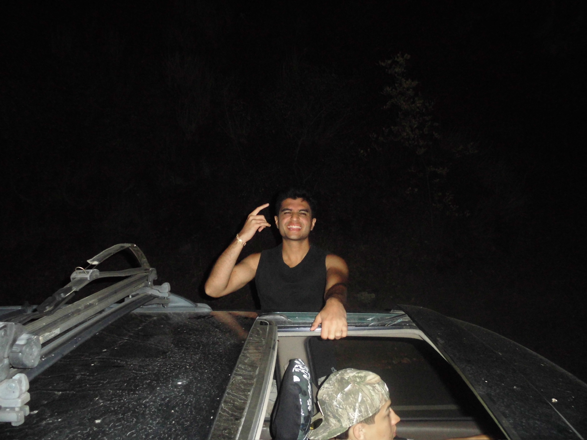
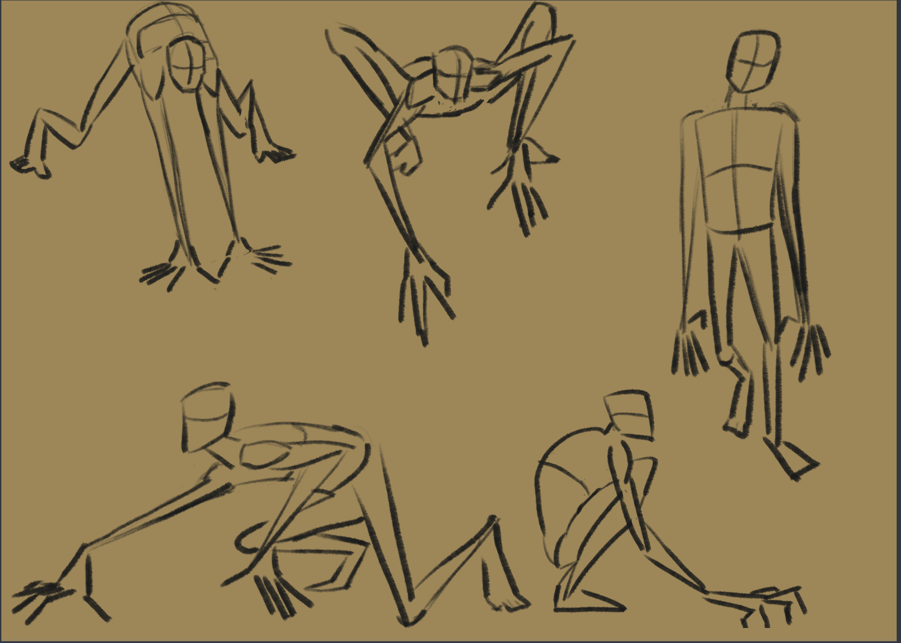
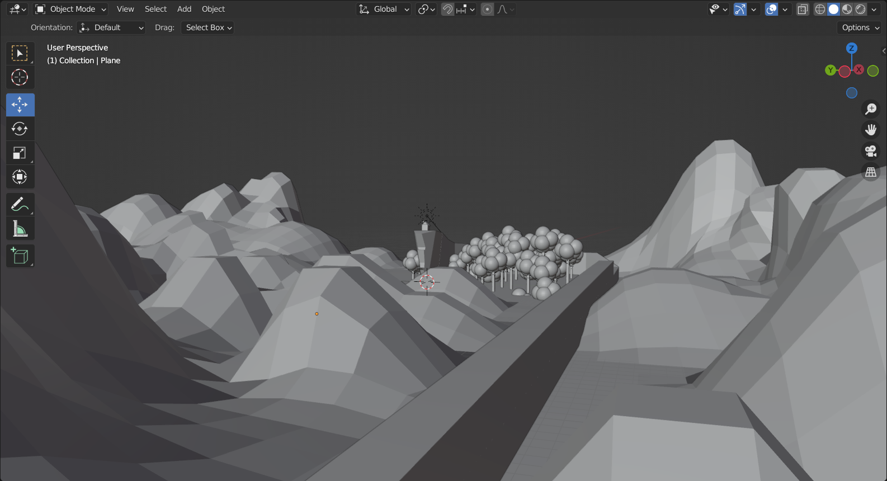
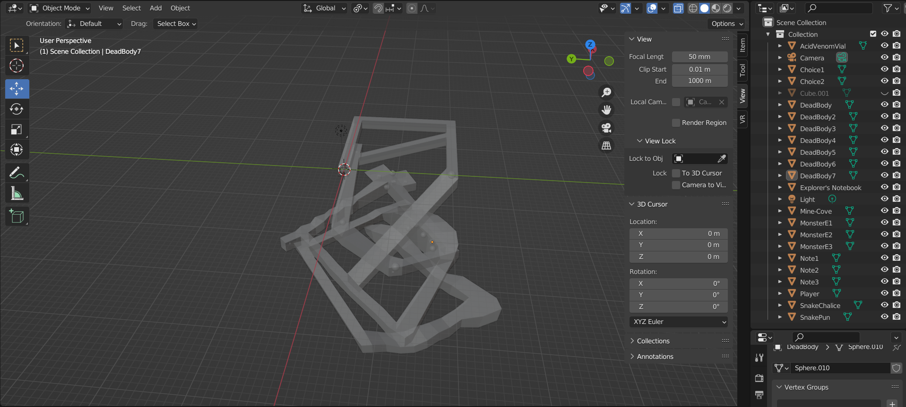
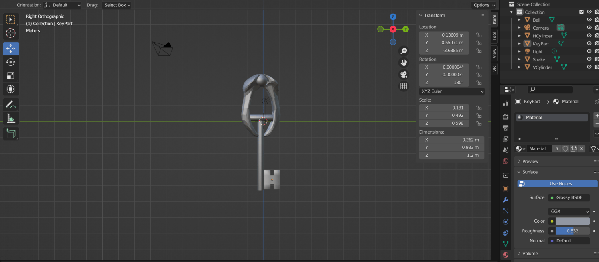
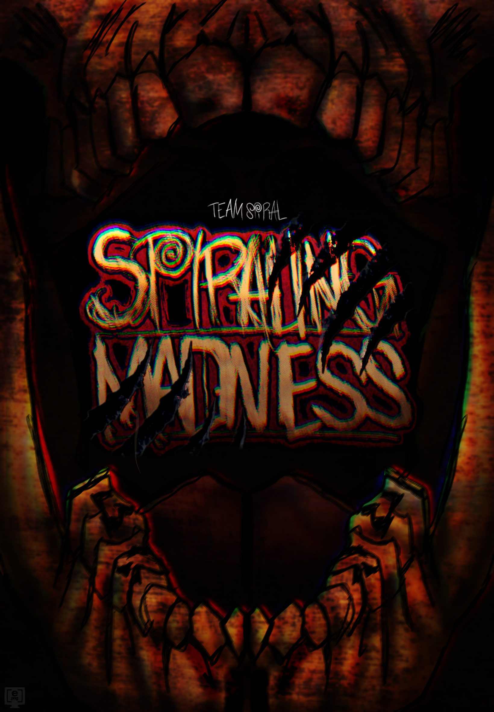
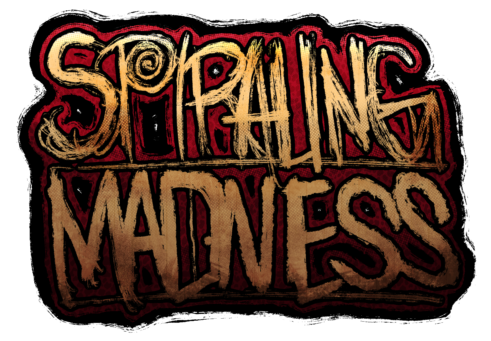
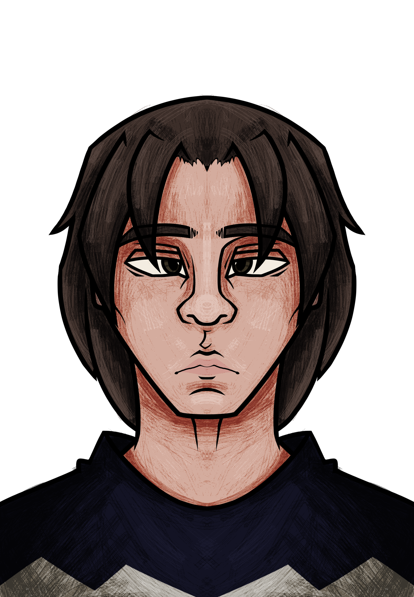
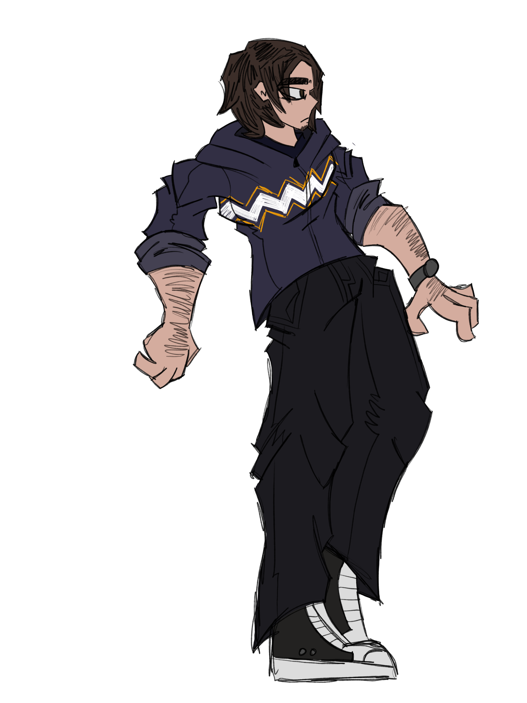
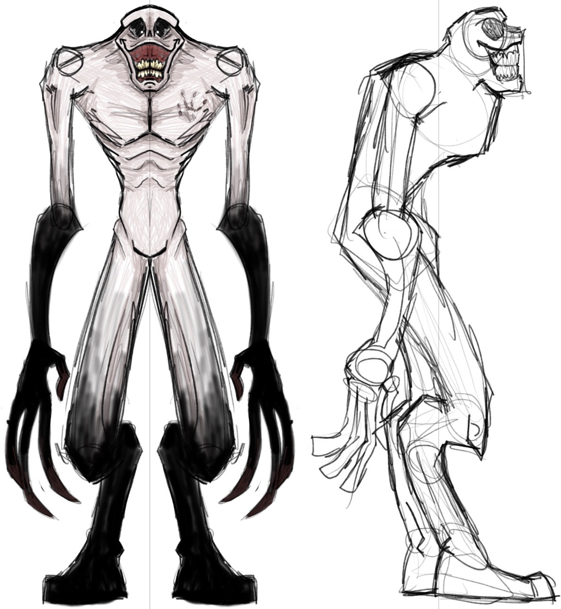

ARYAN ADVANI
( HE/HIM )
Portfolio: LINK
About the Artist
Aryan Advani is a technical artist focused on character development and preproduction, with a strong interest in building immersive worlds through both artistic vision and technical execution. Working across modeling and rigging, Aryan is especially dedicated to creating seamless, expressive, and inventive character animation that brings his designs to life. His practice is driven not only by the final visual result, but also by the systems and workflows that make strong creative work possible. As a result, pipeline development has become an important and evolving part of every project he takes on. By developing efficient tools and processes, Aryan explores ways to improve production from its earliest stages. A model-generation pipeline, for example, can support layout design, accelerate ideation, and help visualize the overall direction of a character before moving deeper into production. His work often exists within fantasy settings, where he enjoys shaping controlled environments and using technical artistry to give life, mood, and movement to imagined worlds. Through this balance of structure and creativity, Aryan aims to create characters and visual experiences that feel both intentional and alive. Between the gray and the binary, Aryan sees technical direction as a way to connect artistry with meaning. His goal is to contribute to feature films by combining character-driven design, animation, and pipeline thinking in the service of meaningful storytelling. Through each project, he continues to refine his craft as both an artist and a problem-solver, using technology not as a substitute for emotion, but as a tool to deepen it.

JOSHUA CHAN
( HE/HIM )
Portfolio: LINK
About the Artist
Joshua Chan is an Digital Media Arts Major that puts emphasis on the 3D modeling of asset environmental design creation. He mainly uses Blender for 3D modeling and Godot for his main engine of choice. He strives towards putting his ideas from paper into video games.

ETHAN "[etho.png]" VILCHIS MACEDO
( HE/HIM )
Instagram: @etho.png Portfolio: LINK
About the Artist
"Born in San José, California, Ethan Vilchis Macedo is a Chicano artist and graduate of the Digital Media Arts program at San Jose State University. Inspired by his parents' aid in drawing things for him, he decided to start drawing on his own without needing to ask his parents for help. Throughout his youth, he's always enjoyed drawing super heroes and other forms of interests that he consumed. This has only intensified as he's gotten older, and more interested in the arts. At San Jose State University, Ethan has explored different forms of mediums in classes and in his free time. Ultimately, his love for digital media and concept designing is something that drives him forward. To keep imagining and making it a reality. Often with my pieces, I incorporate intricate line work and line-weights in order to make the character's detailing pop more, alongside complimenting the line work with colors; often being vibrant and rich depending on what the concept/drawing is about."
Spiraling Madness
At its core, SPIRALING MADNESS is a story about isolation, fear, and the fragility of perception. It explores the terrifying possibility that the greatest horror may not be what waits in the dark, but what already exists inside the mind. As Kevin’s grip on reality weakens, players must guide him through a world where every sound, shadow, and whisper could mean the difference between revelation and destruction. Will Kevin uncover the truth buried beneath the cabin, or will he lose himself to the madness before he ever gets the chance? SPIRALING MADNESS is a psychological horror game about isolation, paranoia, and the slow collapse of sanity. After driving through a mysterious tunnel during a road trip meant to clear his mind, Kevin finds himself stranded in a strange and secluded landscape of mountains, forest, and still water. At the top of a cliff stands a lonely cabin that seems abandoned, yet strangely welcoming. But when the silence is broken by bursts of radio static and the cabin begins to reveal disturbing secrets, Kevin is pulled into a nightmare where reality becomes increasingly unstable. As voices, distortions, and unseen horrors close in around him, he must explore the woods and the darkness beneath the cabin to uncover the truth. In a place where fear and madness are indistinguishable, Kevin must decide what is real before it is too late.
Team Spiral is a team of students in the Digital Media and Arts program where they are tasked to create a horror game inspired by PlayStation era graphics. The team was tasked to create different assets such as the level layouts, the assets, the characters, the textures, and finally, sound effects. Together, these things come in to create an adventure for players who dare to roam into the depths of the cabin with the goal of survival.
Aryan Advani's involvement in SPIRALING MADNESS were to create 3D models, animation, and pre-production assets for the game. Aryan handled the creation of the creature, alongside with rigging the creature and texturing such things. The creation of character models and assets was first concepted by Aryan, and the final results of it was a mix between Ethan's concept and Aryan's together. Without his help, the video game will lack that dreadful feel of something stalking you in the darkness.
Joshua Chan's involvement in SPIRALING MADNESS were to create 3D environments and coding the video game itself. Joshua handles most of the asset creation including the furniture inside the cabin, the atmosphere for the world and levels, and puzzles for the game. Without the distinct atmosphere that makes each of the areas unique, it will lack the tonal shift that the game needs to create a horror game.
Ethan Vilchis Macedo's involvement in SPIRALING MADNESS were to set art directions, create concept art, and sound design. Ethan has collaborated with Joshua and Aryan to create concept art for The Figure and the main character, create the logo and poster for the video game. Collaborating with the team, Ethan helped create an environment to cause fear onto the player, create sounds that would make the player turn to where it came from, to create a horrifying and convincing creature who stalks the player.
With these together, SPIRALING MADNESS was born.








